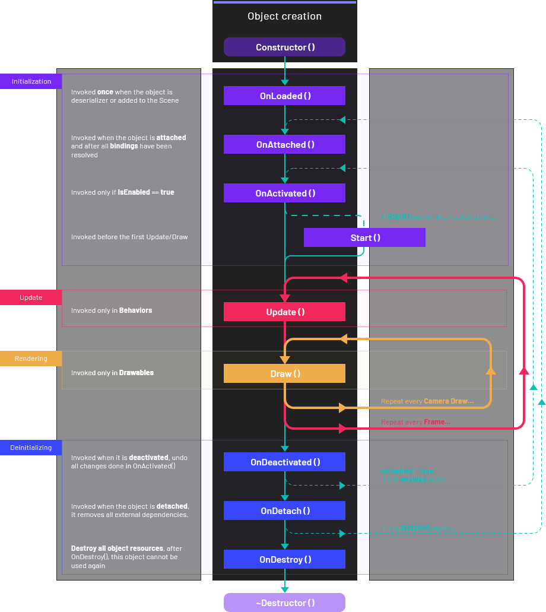

Lifecycle of elements
Running Evergine components, entities or other objects executes a number of functions in a predetermined order. This document describes those functions and explains how they fit into the execution sequence.
The following elements has the same lifecycle methods, and all information described in this document can be applied on each one:
Lifecycle overview
The diagram below summarizes how Evergine orders and repeats function invocations over the element's lifetime:

Lifecycle properties
All elements that implements the default lifecycle shares the same properties. These properties and methods are exposed in the AttachableObject class. Because of this, the Component, Entity, Service or SceneServices classes extend AttachableObject class.
| Property | Description |
|---|---|
| IsEnabled (getter and setter) | Allows to enable or disable an element. A disabled Behavior is not updated, or a disabled Drawable doesn't draw anything. |
| State (getter) | Gets the current state of this object. We cover this area later in this document |
To easy checking states, Evergine offers several properties (getter only) to know in which state are the element:
| Property | Description |
|---|---|
| IsLoaded | Indicates if this object has been loaded (the OnLoaded() method has been invoked). |
| IsAttached | Indicates if this object has been attached (the OnAttached() method has been invoked). When an element is detached this property is set to false |
| IsActivated | Indicates if this object has been activated (the OnActivated() method has been invoked). |
| IsStarted | Indicates if this object has been started (the Start() method has been invoked). |
| IsDestroyed | Indicates if this object has been destroyed (the OnDestroy() method has been invoked). |
Initialization
These methdos get usually called when the Application starts.
OnLoaded()
This method is called after the element is deserialized (during the scene loading) or it is created from code:
- This method is invoked once during the object lifetime.
- OnLoaded() is usually used to initialize all variables and functionality that does not depends on other external elements.
Note
On this step, all Bindings are not yet resolved.
OnAttached()
This method is invoked when an element is attached into Evergine.
- All bindings are resolved prior execution of this method.
- This method is used to stablish dependencies with external elements.
- This method returns a boolean value. Return
trueif the execution has been succeded, otherwise the component is not suscessfully attached.
Note
On this step, all binding elements (Components for example) may not have been attached yet.
OnActivated()
This method is invoked when an element is activated, this can happend after the OnAttached() execution or we change the IsEnabled property.
- This method only is invoked if
IsEnabled == true, if a Component or its Entity has been disabled, this method is not executed. - During this method, we setup the functionality once we have previously stablished all dependencies. We usually put here all code that can be easily undone when the component will be deactivated (subscribe to events for example.)
Note
On this step, all dependencies (Components for example) have being previously attached, but some elements may not have been activated yet.
Start()
This method is called before the first frame update only if the element has been previously activated.
- This method is called only once per attachment. If we enable or disable a Component, the Start method is not called again. However, if we detach a Component and reattach again to an Entity, the Start() method will be called again (after the OnAttached() and OnActivated() invocations)
- In that method we usually put all initialization functionality that depends on other elements and that we only want to execute once.
Note
On this step, all dependencies have being activated, but some elements may not have been started yet.
Per frame loop
During the appliction Update/Draw loop, each Frame the following methods are invoked:
Update()
This method is only available on Behaviors, UpdatableServices or UpdatableSceneManagers.
- This method can only be executed if the element has been started (attached and initialized).
- In general terms, the Update() method is called once per frame.
- We put here execution code to update the application logic or state (player movement, camera input controller, etc...)
Draw()
This method is only available on Drawables
- This method can only be executed if the element has been started (attached and initialized).
- The Draw() method is called once per drawing camera, during the rendering phase.
- We put here all code to update RenderObjects before the camera will process them.
Deinitialization
Evergine follows the following steps to properly destroy or detach an element
OnDeactivated()
This method is called when an activated element becomes disabled or inactive.
- This method is the opposite of OnActivated() method, and it's a good practice to undo all functionalities done in the OnActivated() method (unsubscribe events for example).
OnDetach()
OnDetach is called when an element is detached
- This method is the opposite of OnAttached() method, and it's a good practice to undo all functionalities done in the OnAttached() method.
OnDestroy()
This method is invoke when the element is defintively removed and we want to destroy or dispose objects.
- A destroyed element cannot be attached again, and it is finally disposed.
- A good practice is to remove all internal data of this component (tables, collections, etc...)